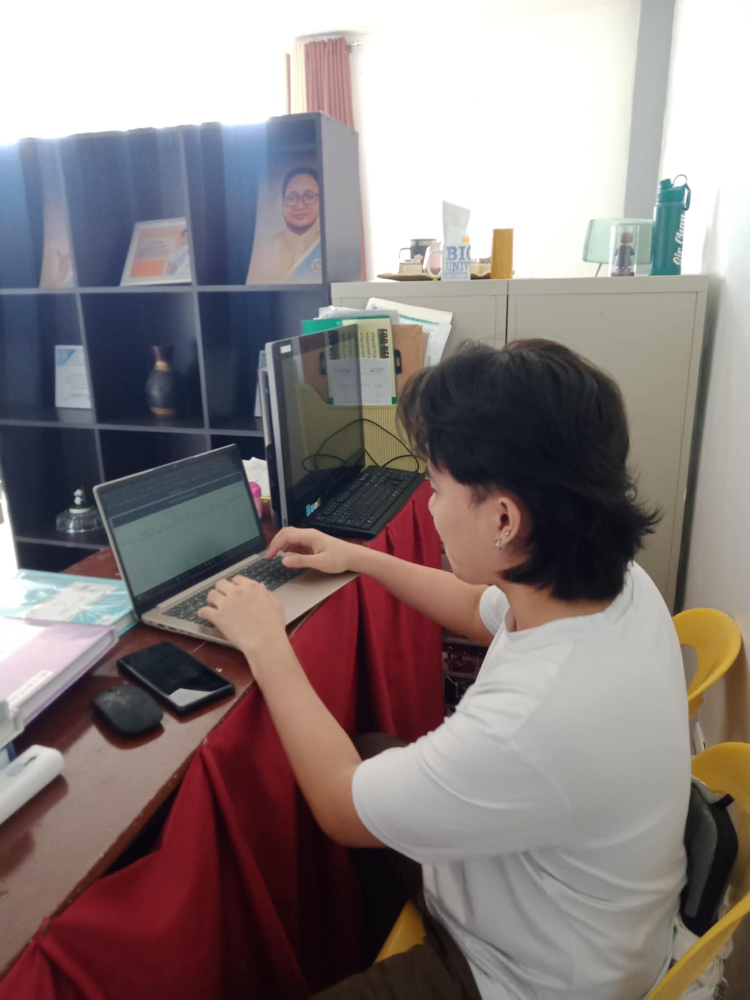
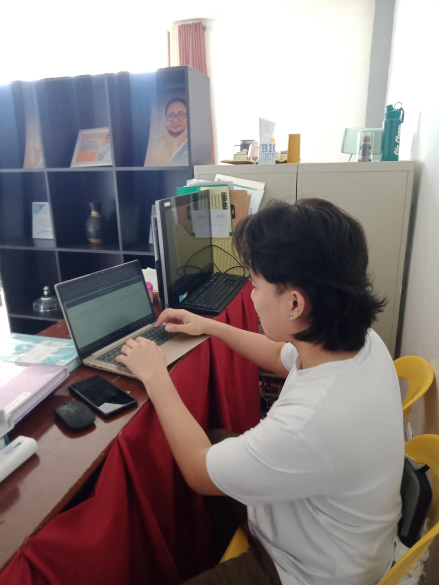

Week 1 of February
Day 1: Our internship began with an orientation led by the dean. Ate Ella guided us to our assigned department, BU-USDS, where we met our mentor. Our team has two IT students and one CBEM student. Our mentor explained our tasks, which include fixing their system and adding new features.
Day 2: We helped renovate tables and organize documents in the office. After that, we started checking the spreadsheet monitoring system to find what needed fixing.
Day 3: There was a power outage, so Sir Ronaldo gave me clerical work. I checked documents to ensure they were complete and organized.
 
